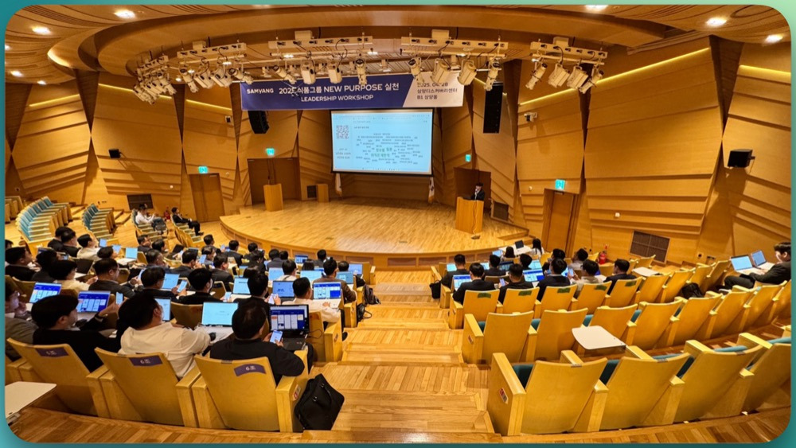
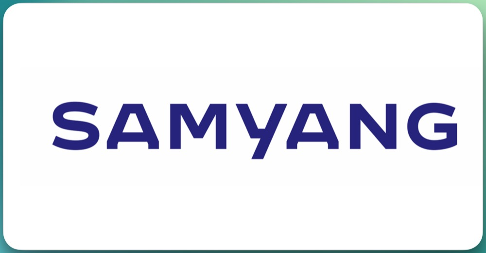
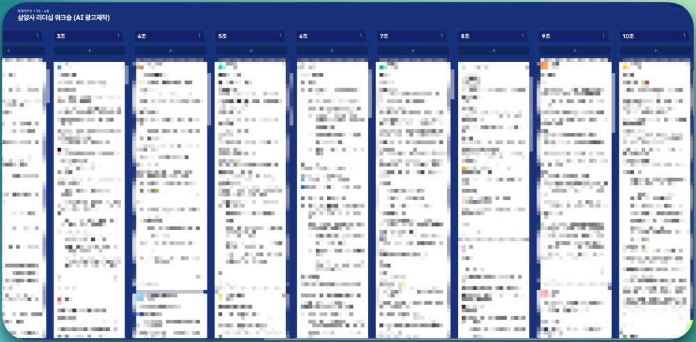
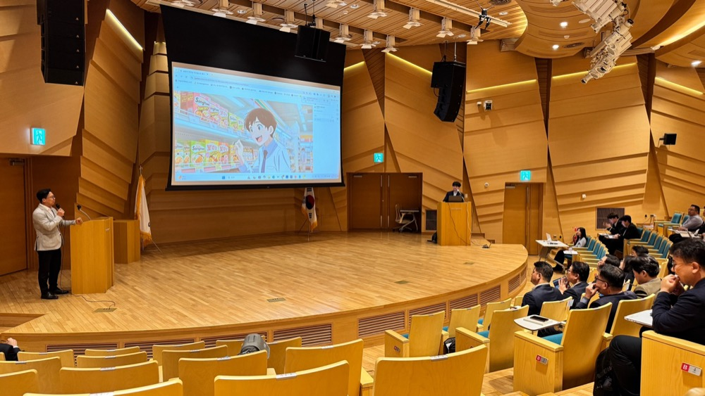

“AI를 몰라선 이끌 수 없다.”
삼양사 리더들을 위한, 팀제이커브의 생성형 AI 실전 워크숍 출강 후기
📌 1. 삼양사는 어떤 회사인가요?

삼양사는 1924년에 설립되어, 100년이 넘는 역사를 지닌 대한민국 대표 종합소재 기업입니다. ‘큐원 설탕’, '상쾌환' 등 으로 널리 알려진 소비재 외에도, 고기능성 플라스틱, 이온교환수지, 제약 소재, 친환경 패키징까지 다양한 B2B 산업을 아우르며 지속가능한 가치를 추구하고 있죠.
✔ 주요 사업 분야
- 화학소재: 엔지니어링 플라스틱, 이온교환수지 등
- 식품소재: 설탕, 밀가루, 유지, 프리믹스 (큐원 브랜드)
- 의약바이오: 의약 원료 및 바이오소재
- 패키징소재: 친환경 필름 및 포장재
특히 최근에는 내부적으로 New Purpose를 선언하며, 미래지향적 리더십과 디지털 전환(Digital Transformation)에 발맞춘 다양한 시도를 이어가고 있습니다.
그 핵심 중 하나가 바로 이번 팀제이커브와 함께한 AI 리터러시 기반 리더 교육이었습니다.
🧭 2. 이번 교육의 주제는? “AI 시대의 리더십”
이번 워크숍은 삼양사 팀장 이상급 리더 및 그룹장님까지 포함된 중간관리자 이상 리더층을 대상으로 진행되었습니다.
주제는 명확했는데요,
“AI를 어떻게 우리 조직에 녹여낼 것인가.
그리고 리더는 어떻게 앞장설 것인가.”
였습니다.
단순한 지식 전달을 넘어, 실제로 AI를 ‘직접 사용’하고 ‘함께 일해보는’ 체험 중심 커리큘럼이 특징이었죠.
이론에 그치지 않고, 실제 광고 콘텐츠를 AI와 함께 기획·제작하며 “우리는 어떻게 AI와 함께 일할 것인가?”를 리더 스스로 고민하고 답을 찾아보는 시간이었습니다.
🎥 3. 교육 내용 소개 & 현장
📍교육 구성: 세 단계 실습 중심
🧩 1단계: AI 인식 확장 퀴즈 & 도전
✍️ 2단계: AI와 광고 콘텐츠 기획

ChatGPT 기반 AI 작가와 스토리보드 공동 제작
공익광고, 애니메이션, 썰튜브 등 세 가지 스타일 중 팀별 선택
패들렛 협업을 통한 실시간 아이디어 공유
🎬 3단계: 영상 제작 & 발표

AI 성우, AI 배우, AI 애니메이터 등 도구 활용
완성된 영상은 전 직원 앞 발표 및 시상
차량용 공기청정기, 손마사지기 등 우수팀 경품 제공
👀 현장 반응은 어땠을까요?
팀장급 이상 리더진 분들이었기에 조금은 보수적일 수도 있겠다 싶었지만, 전혀 아니었습니다. 실무진급 이상의 높은 참여도와 열띤 토의가 계속됐어요.
특히 감사하게도,
“정말 ‘AI와 일해본다’는 경험을 처음 했다.”
“간만에 팀활동을 제대로 해보는 시간이었다.”
“리더라면 이 정도는 알아야겠다 싶었다.”
라는 취지의 후기를 많이 남겨 주셨습니다.
💬 4. 교육이 궁금하다면?
이번 삼양사 워크숍은 단순히 AI를 체험하는 시간이 아니었습니다.
‘리더진들이 직접 AI를 다뤄보며, 조직의 변화를 구상하는 진짜 시간’이었습니다.
✅ 이런 조직에 추천드립니다:
🙌 팀제이커브는 무엇을 하나요?
“AI, 가장 인간적인 방향으로 연결합니다.”
팀제이커브는 리더와 조직을 위한 AI 교육 전문 스타트업입니다.
제공하는 서비스
📚 생성형 AI 이해 & 실습 워크숍
🎬 AI 기반 콘텐츠 제작 교육 (영상, 음성, 디자인)
🧠 직무 기반 AI 도구 실습 (기획/문서/보고서/시각화 등)
⚙️ AI 활용 전략 컨설팅 / 온보딩 프로그램
📩 함께 해보고 싶으신가요?
지금, 우리 조직의 리더에게 필요한 건
지식보다도 경험, 그리고 자신감입니다.
AI 시대의 진짜 리더십을 준비하고 싶다면,
지금 바로 팀제이커브에 문의해보세요.
📬 info@teamjcurve.com

📌 1. 삼양사는 어떤 회사인가요?

삼양사는 1924년에 설립되어, 100년이 넘는 역사를 지닌 대한민국 대표 종합소재 기업입니다. ‘큐원 설탕’, '상쾌환' 등 으로 널리 알려진 소비재 외에도, 고기능성 플라스틱, 이온교환수지, 제약 소재, 친환경 패키징까지 다양한 B2B 산업을 아우르며 지속가능한 가치를 추구하고 있죠.
✔ 주요 사업 분야
특히 최근에는 내부적으로 New Purpose를 선언하며, 미래지향적 리더십과 디지털 전환(Digital Transformation)에 발맞춘 다양한 시도를 이어가고 있습니다.
그 핵심 중 하나가 바로 이번 팀제이커브와 함께한 AI 리터러시 기반 리더 교육이었습니다.
🧭 2. 이번 교육의 주제는? “AI 시대의 리더십”
이번 워크숍은 삼양사 팀장 이상급 리더 및 그룹장님까지 포함된 중간관리자 이상 리더층을 대상으로 진행되었습니다.
주제는 명확했는데요,
였습니다.
단순한 지식 전달을 넘어, 실제로 AI를 ‘직접 사용’하고 ‘함께 일해보는’ 체험 중심 커리큘럼이 특징이었죠.
이론에 그치지 않고, 실제 광고 콘텐츠를 AI와 함께 기획·제작하며 “우리는 어떻게 AI와 함께 일할 것인가?”를 리더 스스로 고민하고 답을 찾아보는 시간이었습니다.
🎥 3. 교육 내용 소개 & 현장
📍교육 구성: 세 단계 실습 중심
🧩 1단계: AI 인식 확장 퀴즈 & 도전
인간 vs AI 이미지, 음악 구별 퀴즈
“내가 AI를 잘 알고 있다고 생각했는데…?” 라는 반응 다수
참가자 전원이 몰입한 스타벅스 상품권 걸린 AI 구별 퀴즈
✍️ 2단계: AI와 광고 콘텐츠 기획

ChatGPT 기반 AI 작가와 스토리보드 공동 제작
공익광고, 애니메이션, 썰튜브 등 세 가지 스타일 중 팀별 선택
패들렛 협업을 통한 실시간 아이디어 공유
🎬 3단계: 영상 제작 & 발표

AI 성우, AI 배우, AI 애니메이터 등 도구 활용
완성된 영상은 전 직원 앞 발표 및 시상
차량용 공기청정기, 손마사지기 등 우수팀 경품 제공
👀 현장 반응은 어땠을까요?
팀장급 이상 리더진 분들이었기에 조금은 보수적일 수도 있겠다 싶었지만, 전혀 아니었습니다. 실무진급 이상의 높은 참여도와 열띤 토의가 계속됐어요.
특히 감사하게도,
라는 취지의 후기를 많이 남겨 주셨습니다.
💬 4. 교육이 궁금하다면?
이번 삼양사 워크숍은 단순히 AI를 체험하는 시간이 아니었습니다.
‘리더진들이 직접 AI를 다뤄보며, 조직의 변화를 구상하는 진짜 시간’이었습니다.
✅ 이런 조직에 추천드립니다:
리더들의 AI 마인드셋 전환이 필요한 기업
실습 기반의 몰입형 AI 교육을 찾는 기업
AI 리터러시를 기반으로 조직 문화 전환을 이끌고자 하는 곳
🙌 팀제이커브는 무엇을 하나요?
“AI, 가장 인간적인 방향으로 연결합니다.”
팀제이커브는 리더와 조직을 위한 AI 교육 전문 스타트업입니다.
제공하는 서비스
📚 생성형 AI 이해 & 실습 워크숍
🎬 AI 기반 콘텐츠 제작 교육 (영상, 음성, 디자인)
🧠 직무 기반 AI 도구 실습 (기획/문서/보고서/시각화 등)
⚙️ AI 활용 전략 컨설팅 / 온보딩 프로그램
📩 함께 해보고 싶으신가요?
지금, 우리 조직의 리더에게 필요한 건
지식보다도 경험, 그리고 자신감입니다.
AI 시대의 진짜 리더십을 준비하고 싶다면,
지금 바로 팀제이커브에 문의해보세요.
📬 info@teamjcurve.com